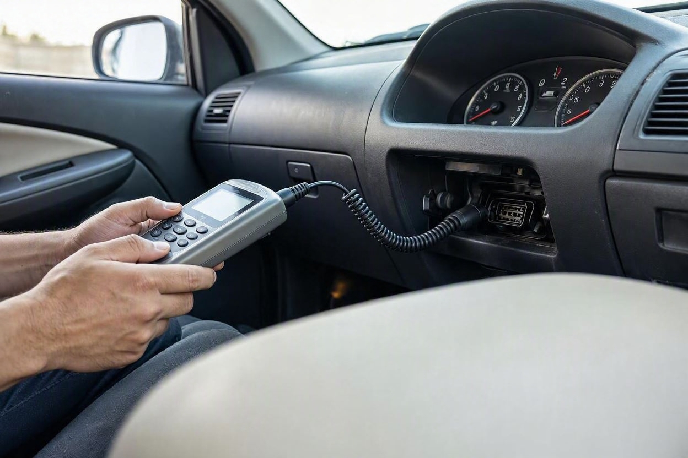
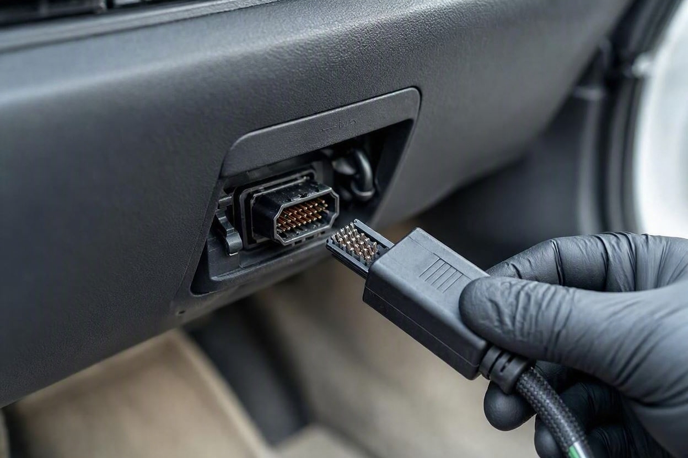
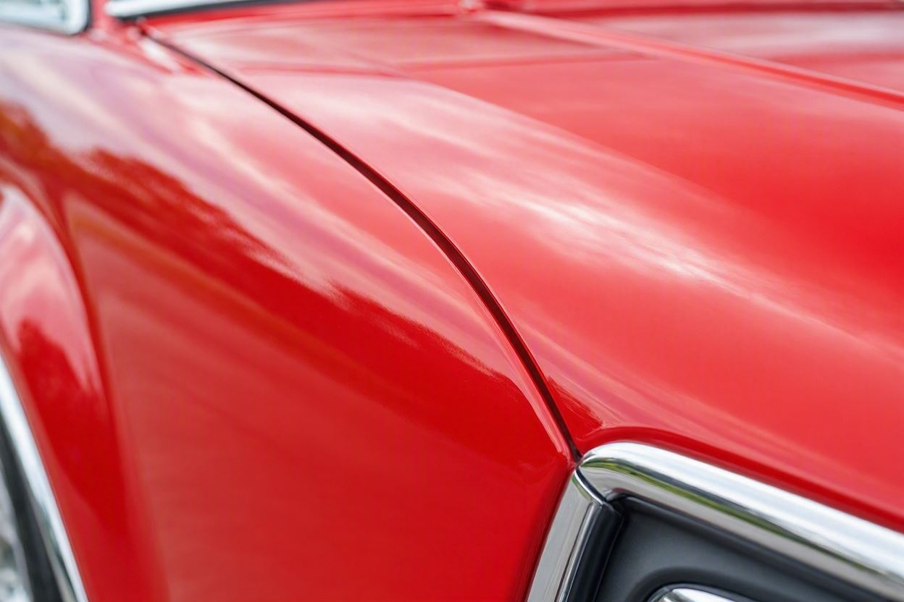
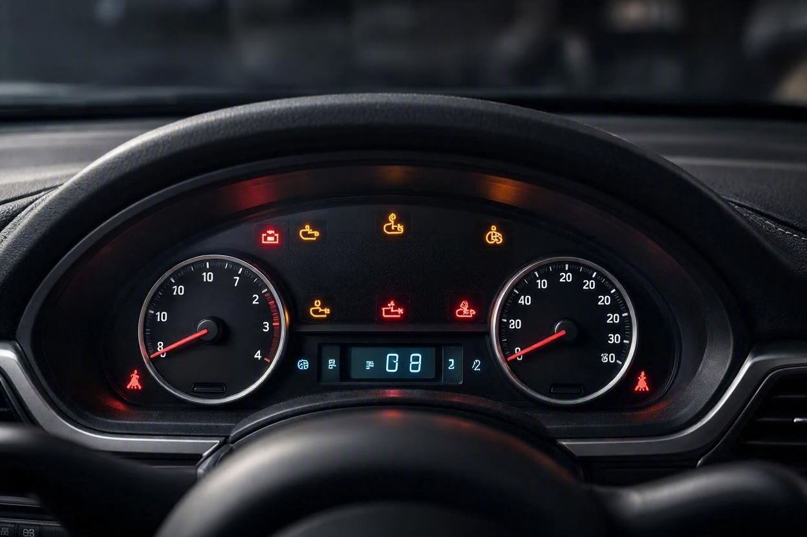

دیاگ خودرو قبل از خرید؛ چه چیزهایی را مشخص میکند و چه چیزهایی را نه
فرض کنید برای دیدن یک خودروی دستدوم رفتهاید و فروشنده با اطمینان میگوید «دیاگش پاکه، هیچ خطایی نداره». همین یک جمله باعث میشود خیلی از خریدارها خیالشان راحت شود و از بقیه بررسیها بگذرند. اما دیاگ فقط یک بخش از سلامت خودرو را نشان میدهد و درست همینجاست که سوءتفاهم شکل میگیرد.
دیاگ خودرو وضعیت سیستمهای الکترونیکی را میخواند و خطاهای ثبتشده در ایسیو، مشکل سنسورها، ایرادهای موتور و گیربکس اتوماتیک و آمادهبودن سیستمها را نشان میدهد. اما درباره رنگشدگی، تصادف، وضعیت شاسی، خوردگی بدنه و کیفیت واقعی قطعات مکانیکی چیزی نمیگوید. برای همین دیاگ مکمل کارشناسی است، نه جایگزین آن. نتیجه دیاگ را باید کنار بررسی چشمی و فنی گذاشت.
خلاصه در یک دقیقه
- دیاگ فقط اطلاعات بخش الکترونیکی و کنترلی خودرو را میخواند، نه سلامت فیزیکی بدنه و شاسی.
- خطاهای دیاگ چند دقیقه قبل از تست پاک میشوند؛ پس «بدون خطا بودن» بهتنهایی تضمین نیست.
- رنگشدگی، تصادف، جوشخوردگی شاسی و کیلومتر واقعی با دیاگ مشخص نمیشوند.
- دیاگ برای بررسی موتور، گیربکس اتوماتیک، ایربگ و سنسورها بسیار مفید است.
- تصمیم درست وقتی گرفته میشود که نتیجه دیاگ در کنار کارشناسی فنی و بدنه دیده شود.
دیاگ خودرو دقیقاً یعنی چه؟
دیاگ یعنی اتصال یک دستگاه عیبیاب به پورت مخصوص خودرو (معمولاً زیر داشبورد) و خواندن اطلاعاتی که واحد کنترل الکترونیکی یا همان ایسیو در حافظهاش ذخیره کرده است. خودروهای امروزی دهها سنسور دارند و هر رفتار غیرعادی بهصورت یک کد خطا ثبت میشود. دستگاه دیاگ این کدها را میخواند و به زبان قابلفهم نشان میدهد.
پیش از اینکه وارد جزئیات شویم، خوب است بدانید مجموعههایی مثل کارماچک دیاگ را همیشه در کنار بررسی فنی و بدنه انجام میدهند، چون هرکدام بخش متفاوتی از واقعیت خودرو را روشن میکنند. دیاگ بهتنهایی تصویر کاملی به شما نمیدهد.
نکته مهم اینجاست که دیاگ یک آزمایش نرمافزاری است. یعنی فقط چیزی را میبیند که سیستمهای الکترونیکی خودرو حس کرده و ثبت کرده باشند. هر ایرادی که سنسور نداشته باشد، از دید دیاگ پنهان میماند.
دیاگ چه چیزهایی را مشخص میکند؟
ارزش اصلی دیاگ در بخشهایی است که با چشم و دست قابل بررسی نیستند. اینجا چند مورد مهم را میبینید که دیاگ میتواند روشن کند:

- خطاهای ثبتشده موتور، مانند مشکل احتراق، سنسور اکسیژن، دریچه گاز یا سیستم سوخترسانی.
- وضعیت گیربکس اتوماتیک و کدهای خطای مربوط به تعویض دنده و فشار روغن.
- سلامت سیستم ایربگ و کیسه هوا؛ خطای این بخش با دیاگ بهخوبی دیده میشود.
- مشکل سنسورهای ترمز ایبیاس و سیستم پایداری خودرو.
- خطاهای سیستم برقی، شارژ باتری، دینام و برخی ایرادهای کولر و بخاری.
- آماده بودن یا نبودن سیستمها که نشان میدهد خطاها بهتازگی پاک شدهاند یا نه.
در عمل، دیاگ به شما میگوید مغز الکترونیکی خودرو در گذشته چه مشکلاتی را دیده است. این اطلاعات برای برآورد هزینه احتمالی تعمیر بسیار کمککننده است، مخصوصاً وقتی میخواهید سر قیمت چانه بزنید.
دیاگ چه چیزهایی را نشان نمیدهد؟
اینجا مهمترین بخش ماجراست و همان جایی که خیلی از خریدارها اشتباه میکنند. دیاگ درباره سلامت فیزیکی خودرو تقریباً هیچ چیزی نمیگوید. چند مورد کلیدی که با دیاگ مشخص نمیشوند:

- رنگشدگی و صافکاری بدنه؛ دیاگ هیچ سنسوری برای رنگ ندارد.
- تصادف و ضربهخوردگی قبلی، حتی اگر شدید بوده باشد.
- جوشخوردگی، کشیدگی یا اصلاح شاسی که مستقیم روی ایمنی اثر میگذارد.
- خوردگی، پوسیدگی و زنگزدگی کف و بدنه.
- کیلومتر واقعی خودرو؛ دستکاری کیلومتر با دیاگ ساده مشخص نمیشود.
- فرسودگی مکانیکی مثل لقی جلوبندی، وضعیت کلاچ و کیفیت واقعی قطعات مصرفی.
راستش را بخواهید، بیشترین ضرر معامله معمولاً از همین بخش پنهان میآید؛ یعنی ایرادهای بدنه و شاسی که ربطی به الکترونیک ندارند و دیاگ اصلاً سراغشان نمیرود.
جدول مقایسه؛ مرز دیاگ کجاست
برای اینکه تصویر روشنتری داشته باشید، این جدول مرز کار دیاگ را کنار هم میگذارد:
| موضوع | دیاگ مشخص میکند | دیاگ مشخص نمیکند |
|---|---|---|
| خطاهای موتور | بله، کدهای ثبتشده | سایش داخلی و کیفیت واقعی قطعات |
| گیربکس اتوماتیک | بله، خطاهای الکترونیکی | فرسودگی مکانیکی صفحه کلاچ |
| ایربگ و ترمز ایبیاس | بله، وضعیت سیستم | عملکرد فیزیکی در تصادف واقعی |
| رنگ و بدنه | خیر | رنگشدگی، صافکاری، خوردگی |
| شاسی | خیر | جوش، کشیدگی، اصلاح شاسی |
| کیلومتر واقعی | خیر (بهطور قطعی) | دستکاری کیلومتر |
پیش از معامله، خودرو را کامل بررسی کنید
اگر فقط به نتیجه دیاگ اکتفا کنید، ممکن است بخش مهمی از وضعیت خودرو پنهان بماند. بررسی فنی و بدنه در کنار دیاگ میتواند ابهامهای معامله را کمتر کند.
شروع کارشناسی خودروتله خطاهای پاکشده
یکی از رایجترین ترفندها این است که چند دقیقه قبل از آمدن خریدار، تمام خطاهای دیاگ پاک میشوند. در این حالت دستگاه هیچ کدی نشان نمیدهد و ظاهراً همهچیز سالم است. اما پاککردن خطا مشکل را حل نمیکند و فقط حافظه را خالی میکند.
راه تشخیص این موضوع، بررسی وضعیت آمادگی سیستمهاست. وقتی خطاها تازه پاک شده باشند، بخشی از سیستمها هنوز به حالت آماده نرسیدهاند و یک کارشناس با تجربه این نشانه را میبیند. برای همین بررسی کامل خودرو پیش از خرید فقط خواندن خطا نیست؛ تفسیر درست آن هم اهمیت دارد.
چطور از دیاگ در خرید خودرو درست استفاده کنیم؟
دیاگ ابزار خوبی است، به شرطی که جای خودش استفاده شود. این مسیر ساده به شما کمک میکند از آن بیشترین بهره را ببرید:

- مرحله اول:هنگام روشنکردن سوئیچ به چراغهای هشدار داشبورد دقت کنید؛ خاموشنشدن چراغ چک یا ایربگ نشانه یک مشکل فعال است.
- مرحله دوم:دیاگ را با دستگاه معتبر بگیرید و هم خطاهای فعلی و هم وضعیت آمادگی سیستمها را ببینید، نه فقط نبود خطا.
- مرحله سوم:نتیجه دیاگ را کنار بررسی بدنه، شاسی و تست رانندگی بگذارید؛ هیچکدام بهتنهایی کافی نیستند.
- مرحله چهارم:اگر خطای مهمی دیدید، هزینه احتمالی رفع آن را برآورد کنید و در قیمت نهایی لحاظ کنید.
کارماچک فقط ایراد خودرو را شناسایی نمیکند؛ اثر آن روی هزینه تعمیر و ارزش واقعی معامله را هم مشخص میکند. برای همین نتیجه دیاگ در کنار بررسی بدنه و شاسی معنای درست پیدا میکند.
جمعبندی
دیاگ خودرو یک ابزار مفید است، اما فقط یک بخش از واقعیت را نشان میدهد. این آزمایش خطاهای الکترونیکی، وضعیت موتور، گیربکس اتوماتیک و سنسورها را روشن میکند، اما درباره رنگ، بدنه، شاسی و کیلومتر واقعی سکوت میکند. ظاهر سالم و دیاگ بدون خطا، بهتنهایی تضمین یک معامله مطمئن نیستند. تصمیم درست وقتی گرفته میشود که دیاگ در کنار بررسی فنی و بدنه دیده شود.
مطمئنتر معامله کنید
اگر میخواهید پیش از خرید، تصویر کاملی از وضعیت فنی و بدنه خودرو داشته باشید، میتوانید رزرو کارشناسی را ثبت کنید تا دیاگ و بررسی بدنه با هم انجام شوند.
ثبت درخواست کارشناسیسؤالات متداول
آیا دیاگ خودرو تصادف را نشان میدهد؟
خیر. تصادف و ضربهخوردگی بهصورت کد الکترونیکی در ایسیو ثبت نمیشوند، مگر اینکه به یک سیستم دارای سنسور مثل ایربگ آسیب رسیده باشد. تشخیص تصادف نیازمند بررسی چشمی بدنه، شاسی و درزگیرها توسط کارشناس است، نه دستگاه دیاگ.
اگر دیاگ خودرو هیچ خطایی نداشت، یعنی خودرو کاملاً سالم است؟
نه لزوماً. نبود خطا فقط یعنی بخش الکترونیکی در آن لحظه مشکل ثبتشدهای ندارد. خطاها ممکن است چند دقیقه قبل پاک شده باشند و رنگ، بدنه، شاسی و فرسودگی مکانیکی هم اصلاً در دیاگ دیده نمیشوند. برای همین دیاگ بدون خطا تضمین سلامت کامل نیست.
دیاگ خودرو دستکاری کیلومتر را مشخص میکند؟
بهطور قطعی خیر. با دیاگ ساده نمیتوان مطمئن شد کیلومتر واقعی است یا دستکاری شده. تشخیص کیلومتر واقعی نیازمند بررسی چند نشانه هماهنگ مثل فرسودگی داخل کابین، پدالها و سوابق سرویس است که فراتر از خواندن کد خطا هستند.
دیاگ برای کدام خودروها ضروریتر است؟
برای خودروهای اتوماتیک و مدلهای مجهز به سیستمهای الکترونیکی زیاد. در این خودروها بسیاری از ایرادهای اولیه گیربکس و موتور پیش از آنکه در رانندگی حس شوند بهصورت کد ثبت میشوند و دیاگ میتواند از یک تعمیر پرهزینه جلوگیری کند.
آیا دیاگ جای کارشناسی کامل خودرو را میگیرد؟
خیر. دیاگ مکمل کارشناسی است، نه جایگزین آن. کارشناسی کامل شامل بررسی رنگ، بدنه، شاسی، جلوبندی و تست رانندگی هم میشود که هیچکدام با دیاگ قابل تشخیص نیستند. بهترین نتیجه وقتی به دست میآید که این دو در کنار هم انجام شوند.